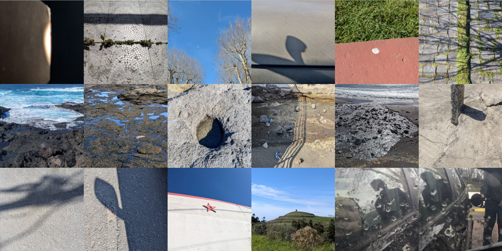

an artist(ic researcher), speaks in the first person, uses the word ‘i’ plurally,
motivated by ethical relationships between individuals, objects and spaces. struggling to differentiate, looks for ways to dissipate borders with attention to subjective encounter;
searches through tension, the instinct to stay still, moves without ease; notices somatic refusal.
angry at the art object, happy with making,
contact.joanafranco@gmail.com
